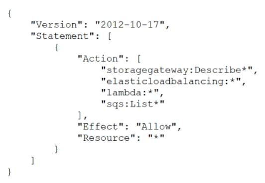
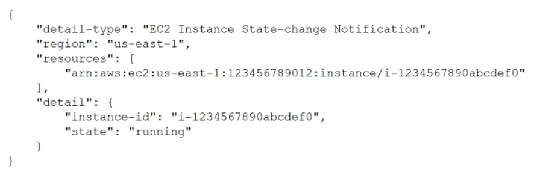

原文
この翻訳を評価してください
いただいたフィードバックは Google 翻訳の改善に役立てさせていただきます
ある企業は、注文、配送、請求などの業務を遂行するために、多数のLinuxベースのAmazon EC2インスタンスを使用しています。同社はAWS Systems Managerを使用してEC2インスタンスを管理しています。同社は、Systems Manager Agent（SSM Agent）が常に最新バージョンに更新されていることを保証したいと考えています。
この要件を最も運用効率の良い方法で満たすソリューションはどれでしょうか？
CloudOpsエンジニアは、アプリケーションのインスタンスメトリクスを1分ごとに収集する監視システムを実装する必要があります。アプリケーションは、可用性の高いAmazon EC2インスタンスのペア上で動作します。監視システムは、メトリクスが事前に定義されたしきい値を超えた場合に、電子メールアラートを送信する必要があります。
これらの要件を満たすソリューションはどれですか？
ある企業は、Amazon EC2 上で Application Load Balancer (ALB) を使用して、グローバルなユーザーベースを持つ Web サイトを管理しています。Web サーバーの負荷を軽減するため、CloudOps エンジニアは ALB をオリジンとする Amazon CloudFront ディストリビューションを設定しました。1 週間監視した後、CloudOps エンジニアは、リクエストが依然として ALB によって処理されており、Web サーバーの負荷に変化がないことに気づきました。
この問題の考えられる原因は何ですか？（2 つ選択してください。）
ある企業が、AWS上で完全に稼働しているシステムの外部監査を受けています。CloudOpsエンジニアは、AWSが管理するインフラストラクチャのPCI DSS（Payment Card Industry Data Security Standard）準拠に関する文書を提出する必要があります。
この要件を満たすために、CloudOpsエンジニアはどのような一連のアクションを実行すべきでしょうか？
CloudOps エンジニアが AWS CloudFormation を使用して、サーバーレス アプリケーションを本番環境の VPC にデプロイしました。このアプリケーションは、AWS Lambda 関数、Amazon DynamoDB テーブル、および Amazon API Gateway API で構成されています。CloudOps エンジニアは、DynamoDB テーブルを削除せずに AWS CloudFormation スタックを削除する必要があります。CloudOps エンジニアは、
AWS CloudFormation スタックを削除する前に、どのような操作を行うべきでしょうか？
CloudOps エンジニアは、AWS Organizations 構造内の多数の AWS メンバー アカウントのポリシーを管理しています。他のチームの管理者は、メンバー アカウントのルート ユーザー認証情報にアクセスできます。CloudOps エンジニアは、管理者を含むすべてのチームが Amazon DynamoDB を使用できないようにする必要があります。このソリューションは、チームが他の AWS サービスにアクセスする機能に影響を与えてはなりません。
これらの要件を満たすソリューションはどれですか？
CloudOps エンジニアは、特定の AWS サービスへのアクセスが必要な開発者向けに IAM ポリシーを作成する必要があります。要件に基づいて、CloudOps エンジニアは次のポリシーを作成します。

開発チームは、Amazon EC2 マシンの状態が「終了」していない Amazon EventBridge 上のイベントを照合したいと考えています。
イベントの例は次のとおりです。

あるクラウドオペレーションエンジニアが、会社のコスト削減に取り組んでいます。その際、未使用のElastic IPアドレスが複数あることに気づきました。これらのアドレスは、AWS Organizations内の組織において、複数のアカウントとAWSリージョンに分散しています。
クラウドオペレーションエンジニアは、セキュリティドメインに基づいてこれらのアドレスを管理および追跡する必要があります。また、割り当てられたアドレスの履歴を表示できる必要もあります。
これらの要件を満たすソリューションはどれでしょうか？
ある企業は、SaaS（Software as a Service）アプリケーションを提供しています。この企業は、AWS SDKとIAMユーザーのアクセスキーIDおよびシークレットアクセスキーを使用して、アプリケーションをAWSサービスと統合しました。
企業は、IAMユーザーに対して最小権限の原則を実装する必要があります。また、永続的な認証情報の使用は避ける必要があります。
これらの要件を満たすソリューションはどれでしょうか？